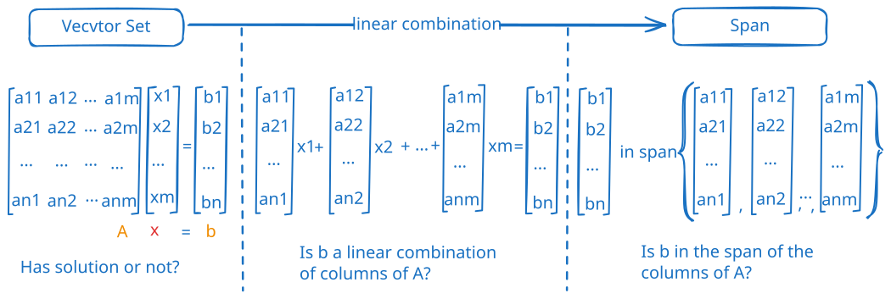

Have Solution
RoadMap

其实并没有真正的去解方程，我们只是一直在“换句话说”。从单纯的解方程角度，变换到“线性组合”和“生成空间”
- linear combination（线性组合）
- 给定一组向量 ${v_1,v_2,…,v_n}$ 和一组实数 ${a_1,a_2,…,a_n}$，线性组合定义为 $b = a_1v_1+a_2v_2+⋯+a_nv_n$。
- 如果能找到一组不全为 0 的 x，使得 b 是这一组 a 的线性组合，那么就有解。
- span（生成空间）
- 给定一组向量 ${v_1,v_2,…,v_n}$ 和任意一组实数 ${a_1,a_2,…,a_n}_i$，生成空间为 ${b_i, i \in F}$。
- 如果 b 落在这组 a 线性组合生成的空间中，那么就有解。
Reference
[1] Linear Algebra Lecture 6: Having Solution or Not